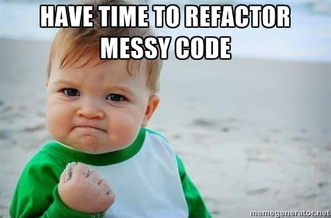
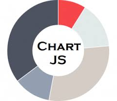

Intermediate JavaScript
06.11.18 ∙ GDI MPLS ∙ Amy Gebhardt

Wifi
Network:
-
Password:
-
Slides:
https://gdiminneapolis.github.io/intermediate-js/class-two.html
Project Files:
https://tinyurl.com/yd9bo3y6
Expectations
Review (today!)
Vanilla JavaScript is ugly (today!)
Define library and framework (today!)
Learn how to research, implement, and use a library (today!)
Hear what the "cool" kids are using these days (today!)
Do some cool stuff with jQuery
How does it look?
How about your code?
Refactoring
"Code refactoring is the process of restructuring existing computer code – changing the factoring – without changing its
external behavior."
Readability, maintainability, less room for error.
Refactor your counter
Use a different
selector to get both buttons into an
array.
Using a
for
loop, step through each button and add the
click event listener it. When clicked, update the
HTML and the
class for the
result element.
There should only be
addEventListener() in your code.
Use a different
selector to get both buttons into an
array.
Instead of using
getElementById() for the
add
and
subtract buttons, you can use
getElementsByTagName().
buttons is now an
array of
elements.
Using a
for
loop, step through each button and add the
click event listener it. When clicked, update the
HTML and the
class for the
result element.
Set up the
for
loop and set the
break condition
to be the
length of the
buttons array.
Using a
for
loop, step through each button and add the
click event listener it. When clicked, update the
HTML and the
class for the
result element.
Store the "current" button on each
iteration of the
loop using
bracket notation.
Using a
for
loop, step through each button and add the
click event listener it. When clicked, update the
HTML and the
class for the
result element.
Add the
event listener for the current button.
Using a
for
loop, step through each button and add the
click event listener it. When clicked, update the
HTML and the
class for the
result element.
To determine if we should
add or
subtract 1 from the result, we'll need to get at the current button's
innerHTML. We need to do this with the
this keyword.
Using a
for
loop, step through each button and add the
click event listener it. When clicked, update the
HTML and the
class for the
result element.
There are a few different ways to go forward. You could use a
conditional statement to add or subtract 1.
You could also use the +/-
string and convert it to an
interger
since JavaScript will keep track of the sign. That way, you could always add the value.
Option #1: Use conditional statements
Option #2: Use the string & always add
Using a
for
loop, step through each button and add the
click event listener it. When clicked, update the
HTML and the
class for the
result element.
Finally, update the
class just as we did before.
Save and test.
Is everything still working as it did?

Even though we've refactored, JavaScript can still be kind of ugly.
In the world of programming, developers are always trying to find ways to make writing code easier and prettier.
JavaScript Libraries & Frameworks
A JavaScript library is...
a package of pre-written JavaScript that allows for easier development.
Easier, cleaner code.
Avoid re-inventing the wheel.
Get away from tricky "vanilla" JS.
Be consistent with standards.
A JavaScript framework is...
a package of pre-written JavaScript that allows for easier development.
Easier, cleaner code.
Avoid re-inventing the wheel.
Get away from tricky "vanilla" JS.
Be consistent with standards.
Frameworks are a lifestyle.
Tend to be more about standards/consistency.
About methodologies, philosophies, & code structure.
Libraries are a collection of tools.
Tend to be more about plugins, features, etc.
About providing tools without all the rules.
Be prepared:
You'll see blogs, developers, even companies use these terms differently.
Popular Libraries:


JavaScript libraries and frameworks live in separate .js files.
You include these in your own project directory and then you can use them!
Let's try it!
Move the moment.min.js file to your project's lib directory.
Create a new file in the intermediate-js-project-files directory.
Save as workingWithMoment.js.
In index.html, update the src attribute
of your <script> tag and then add a new one for moment.min.js.
Now your page knows about moment!
Let's try it!
Using the new library, have your page display your age.
Use fromNow() method shown on the MomentJS front page.
Part of using libraries and frameworks is learning how to follow their documentation.
Installing libraries/frameworks
for your project
1) Download & save in your project directory.
(GitHub, website, etc)
2) Use a CDN.
(content delivery network; allow someone else - like Google - to host)
3) Use a package manager.
Thanks for coming
See you next week!
Have feedback you'd like to share before next week? Let us know!